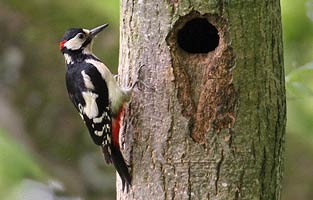

|  |  |
|
What to look for in May
Early May is a favourite time for a passing Hobby. I don't know why these birds aren't seen more regularly at the reservoir.
Not a good month for waders with high water levels and little shoreline, though a Sanderling appeared in May 1976.
Arctic Tern is possible with the record count of 17 being in May 1984. Common Tern and Black Tern too are a possibility.
Swifts arrive in May after the Swallows and Martins.
May is traditionally a good month for Cuckoo but sadly they have been scarce in recent years.
Listen for singing Blackcaps, Chiffchaffs and Reed Warblers and just hope for the more unusual Whitethroat, Lesser Whitethroat and Garden Warbler.
Spotted Flycatchers arrive in May after most migrants have already settled in.
